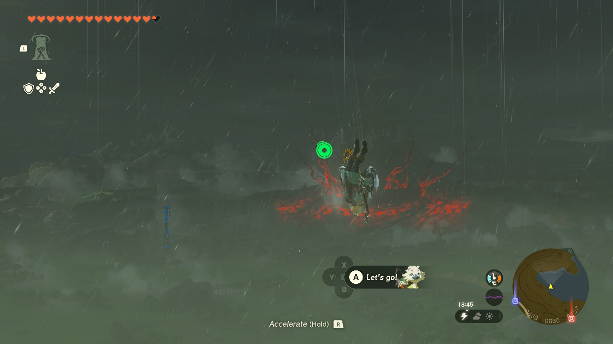
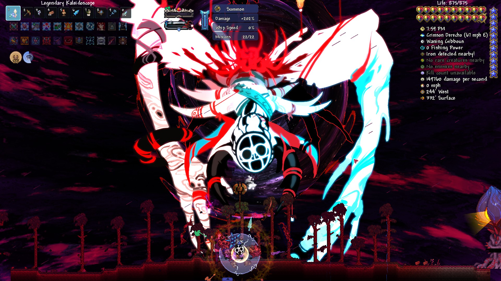
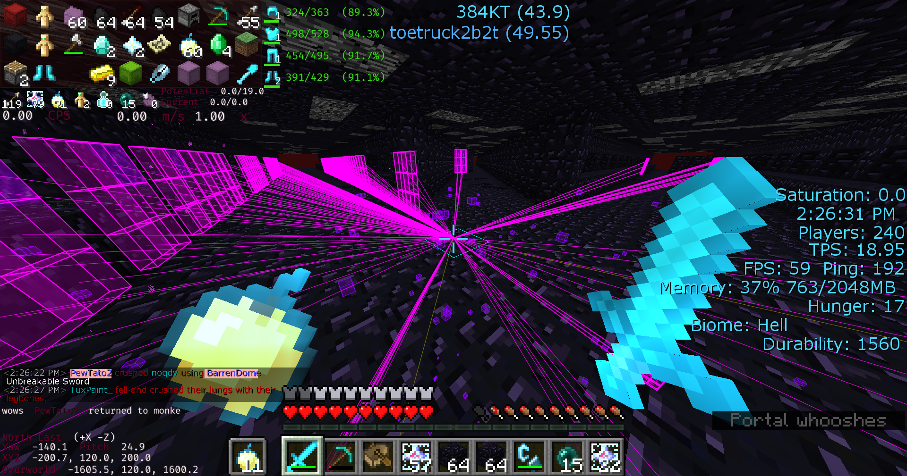
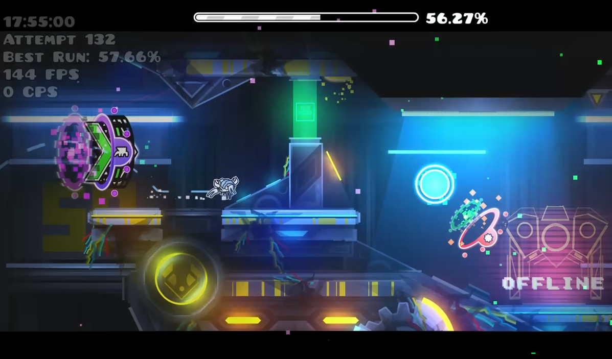
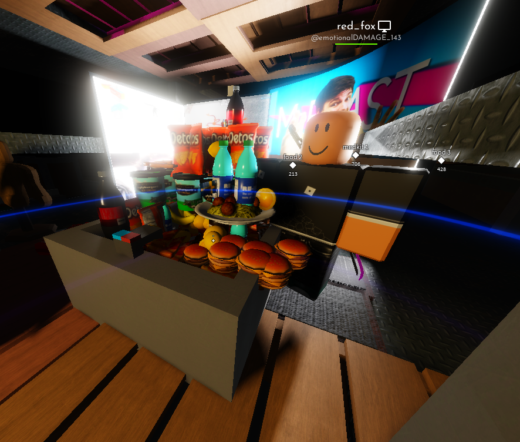
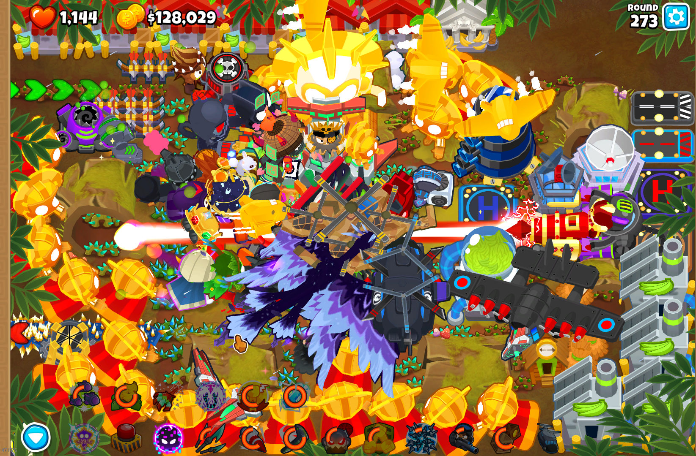
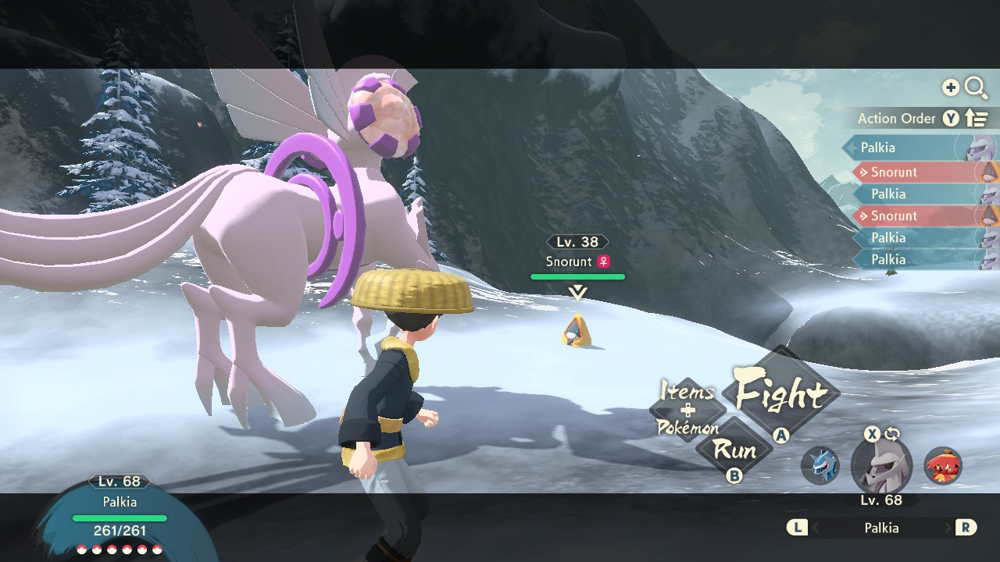
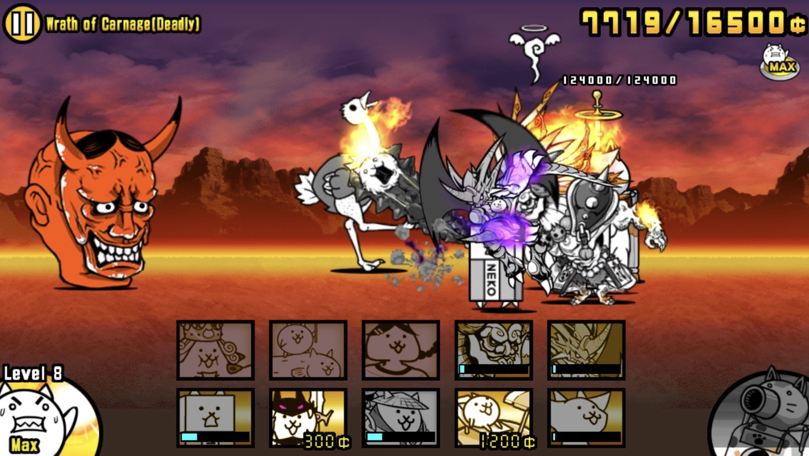
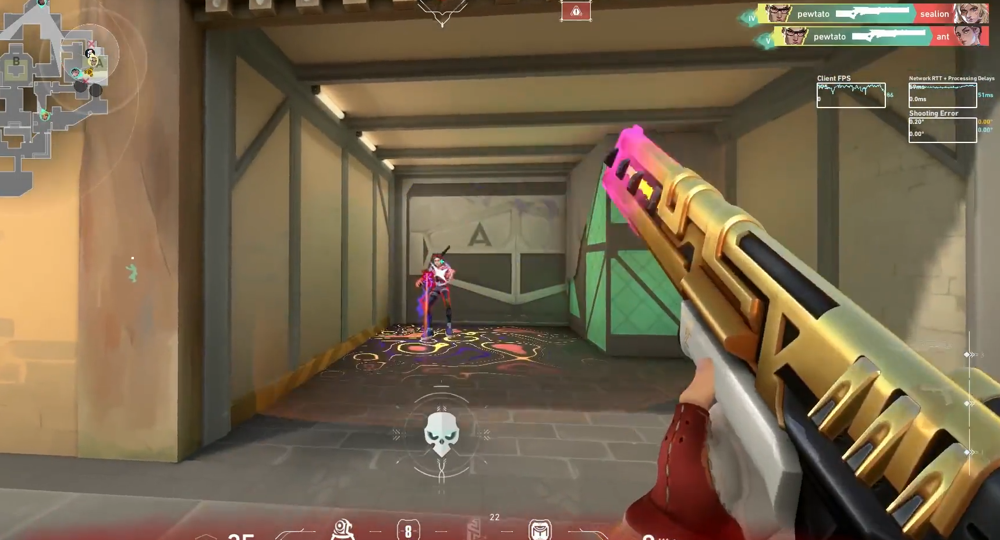
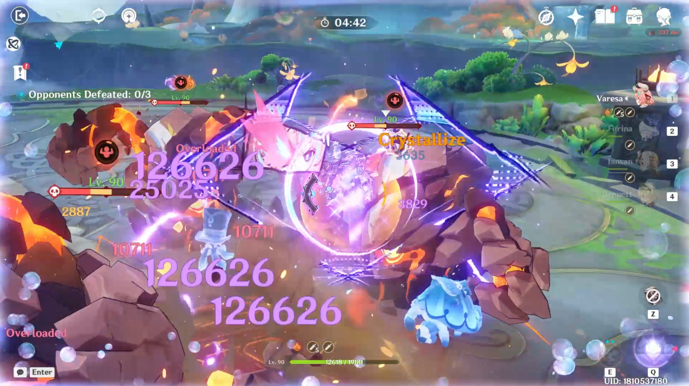

Here are the video games I've played the most and my thoughts on them.

Still my favorite video game of all time. When I played Tears of the Kingdom for the first time, I fell in love with the game's combat, mechanics, story, music, sound effects, world building, and especially the exploration---basically the whole game. This game literally glued my fingers to my Switch for the majority of the school holiday. Each and every moment of playing filled me with excitement. Even now I still crave for a game that can give me the same experience TOTK did.
Halfway through the game I discovered this was the sequel to Breath of the Wild. I was pretty disappointed in myself for buying playing the sequel before the prequel. BOTW is definitely next on my list.
if i get dementia someone tell me to play this again

Terraria takes the spot as my second favorite game. Every time I finished a playthrough, I would always start a new playthrough after a few months with increased difficulty and a different class. I love how the game progresses between each boss until endgame so it really feels like an achievement after every significant boss I defeat.
Terraria has top-tier music, bossfights, progression, and mechanics. Each of the four classes are very unique and always interesting to try in a new playthrough.
When I got this game I immediately played it with mods, specifically the Calamity Mod, which just added so much more to the vanilla experience. Don't even get me started on the sountracks.

Minecraft was one of the first games I was ever introduced to. Growing up I watched a large amount of Minecraft content on Youtube and I was so interested in the sandbox capabilities of the game. I would always be jealous of the people who actually owned the game and could play it with mods.
But when I could finally play Minecraft it created many memories. The music and creativity in this game has always stuck with me. Playing with friends was honestly also an unforgettable experience. A server would last for a month at most before everyone got bored but it was still very fun.
The modding experience was also very interesting. I felt so intelligent when I used 'win + r' and typed in %appdata% to find the .minecraft folder all to be frustrated by incompatible mods. But it was very worth it modding for 2 hours to play for 30 minutes. top 10 game oat

For some reason I decided to spend this many hours on a game where a cubejumps over spikes. But somehow I still stuck with it and continued playingdifferent levels slowly getting better and better. I always enjoyed practicinga level, beating it, and looking back to see how far I've gone. It also justfelt unbelievable that I managed to beat a level I thought would be impossible.
The hardest level I've currently beaten was 'Acu' by neigefeu. It was difficultbeing a jump from Windy Landscape but it was still fun to play. So far I haven'tbeaten anything harder than that for two years neither have I actually playedthat much. Maybe I'll eventually start playing again.

Unfortunately the game I've spent the most time playing. The majority of games onthis platform are slop with greedy developers. Most of the time the trendinggames are the most unoriginal low-effort games while the actual gems have no morethan 1k active players.
But I do appreciate the few good games on this platform. I would play a lot of Build a Boat for Treasure, Tower Defense Simulator, and a variety of games my friendsplayed when I was younger. Now I usually play Combat Initiation, Midnight Racing:Tokyo, and still some TDS which fell off a bit.
Some games are actually super well-made and actually have passionate developers.I did enjoy these and I actually have some nostalgia from the games I playedwhen I was younger however.
TL;DR most Roblox games are terrible but there are a few of good quality.

BTD6 is a fun game. It takes quite a bit of strategy especially when considering which monkeys will and will not be effective. I even have to think about my money spending and the correct upgrades. Playing with friends also just adds so much more to the strategies to consider.
But I also really like the sheer amount of options players have for their defense. There are a large amount of monkeys and heroes to choose from plus three different upgrade paths for each monkey. I think this just gives so many more possible options for different strategies instead of there just being one meta stretegy that all players are demanded to use.

This game was pretty interesting for me, being the first game I ever actually played on the Switch, and the first official Pokemon game I've played. I found its open world system so much more appealing than the original Pokemon games where you are forced to battle everyone you see on every route. This just let me play at my own pace which I liked a lot. Being exploration-based like TOTK satisfied what I've been searching for a bit as well.
Despite the graphics being on the worse side and the NPCs having no voice acting, I still found the gameplay enjoyable itself. I liked how free I was to just move on to the next objective or stay and continue improving my Pokemon.
This game is pretty good but it just felt repetitive after some progression. I feel like it just lacks a bit of story depth but it's still pretty fun.

This is the most free-to-play mobile game I've ever played. I was surprised how easy it was to actually get good cats and progress without having to spend a single cent. Even though it has a gacha system, it doesn't make players grind for ages to get good units. The rates for an Uber Rare are 5%, which is so high compared to the rates of a SSR, 5*, Legendary, and similar rarities in other gacha games.
The game doesn't make more common cats completely useless either. Even though Uber Rares are stronger, they are more expensive than Rares or Super Rares which make them necessary to use as well. Sometimes, non-Uber Rares can actually be better which gives players a wider range of options to include in their lineups instead of being forced to stick with rarer units.
This game is very fun and engaging, featuring hundreds of levels to complete and progress through. There won't ever be 'nothing left to do' in this game.

I love the matchmaking in this game. I always get matched with players of the same skill level as me which always makes the game very enjoyable. I also love how every agent is so balanced and how player's don't have to pick certain meta agents to play well. The gunplay and bullet accuracy is so fair and consistent, especially when paired with abilities which don't feel overwhelming at all when it's used against me.
$144.50 is also such a cheap price for a skin bundle consisting 3 guns and a knife I love Riot Games!!!
this game can be pretty fun with friends tho if we are winning

Completely ignoring its chud community, this game actually has a very engaging story, well-written lore, and amazing exploration mechanics. For me, this game combined the exploration and story TOTK had with the grindiness of the majority of Roblox games I played. This led me into spending almost 300 hours in this game.
It always felt rewarding whenever I got a new character, built them, and saw the new, larger numbers. I really like the team building in this game, with its vast amount of characters plus its many Elemental Reactions. This freedom to use each character in different ways really just makes each team feel original.